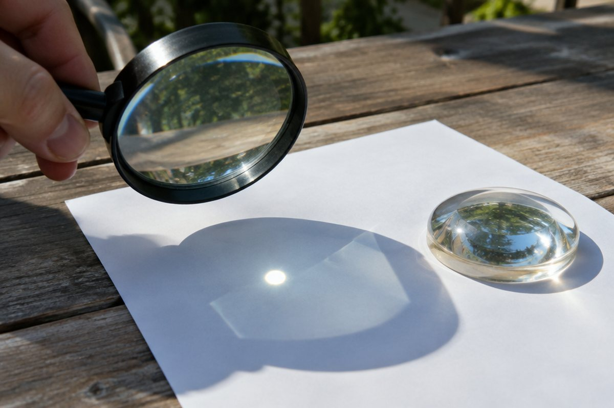

전체 단원 › 5학년 1학기 › 과학 › 빛과 렌즈
돋보기로 보면 왜 크게 보일까?

돋보기로 개미를 보면 커다랗게 보이고, 햇빛을 한 점에 모으면 종이를 태울 수도 있어요. 렌즈는 어떻게 빛을 다룰까요?
햇빛은 여러 빛깔로 되어 있어요
햇빛을 프리즘에 통과시키면 하얀 종이 위에 빨강, 주황, 노랑, 초록, 파랑, 남색, 보라처럼 여러 빛깔이 나타나요.
이것으로 햇빛이 여러 가지 빛깔의 빛으로 이루어져 있다는 것을 알 수 있어요.
비가 그친 뒤 하늘에 생기는 무지개는 공기 중 물방울이 프리즘처럼 햇빛을 여러 빛깔로 나눈 거예요.
빛은 경계에서 꺾여요 – 굴절
빛이 공기 중에서 물이나 유리로 비스듬히 들어가면 두 물질의 경계에서 꺾여 나아가요. 이것을 '빛의 굴절'이라고 해요.
빛이 경계에 수직으로(똑바로) 들어가면 꺾이지 않고 그대로 나아가요.
물이 든 컵에 젓가락을 넣으면 젓가락이 수면에서 꺾여 보여요.
볼록 렌즈의 특징
볼록 렌즈는 가운데가 가장자리보다 두꺼운 렌즈예요. 볼록 렌즈를 통과한 빛은 굴절하여 한 곳으로 모여요.
햇빛을 볼록 렌즈로 모으면 빛이 모인 곳은 더 밝고 온도도 높아요. 그래서 검은 종이를 태울 수 있어요. 이 활동은 반드시 어른과 함께하고, 렌즈로 해를 직접 보면 절대 안 돼요!
물이 담긴 둥근 어항이나 유리구슬도 볼록 렌즈처럼 빛을 모을 수 있어요.
볼록 렌즈로 본 모습
볼록 렌즈로 가까운 물체를 보면 실제보다 크게 보여요. 멀리 있는 물체를 보면 상하좌우가 바뀌어(거꾸로) 보이기도 해요.
볼록 렌즈의 성질을 이용한 도구로는 돋보기, 현미경, 망원경, 사진기, 확대경 등이 있어요.
간이 사진기를 만들면 볼록 렌즈 때문에 스크린에 바깥 풍경이 거꾸로 비쳐요.
핵심 낱말
- 프리즘
- 빛을 여러 빛깔로 나누는 투명한 삼각기둥 모양의 기구
- 빛의 굴절
- 빛이 서로 다른 물질의 경계에서 꺾여 나아가는 것
- 볼록 렌즈
- 가운데가 가장자리보다 두꺼운 렌즈
- 돋보기
- 볼록 렌즈로 물체를 크게 보이게 하는 도구
- 간이 사진기
- 볼록 렌즈와 스크린으로 만든 간단한 사진기
한 줄 정리
- 햇빛은 여러 빛깔의 빛으로 이루어져 있어요.
- 빛은 서로 다른 물질의 경계에서 꺾여요(굴절).
- 볼록 렌즈는 빛을 모으고, 물체를 크게 또는 거꾸로 보이게 해요.
학교 교육과정 연결
- [6과02-02] 빛이 나아가는 현상을 관찰하여 빛이 직진, 반사, 굴절하는 성질이 있음을 말할 수 있다.
- [6과02-03] 거울과 렌즈의 쓰임새를 조사하고 거울이나 렌즈를 이용한 장치를 창의적으로 만들 수 있다.